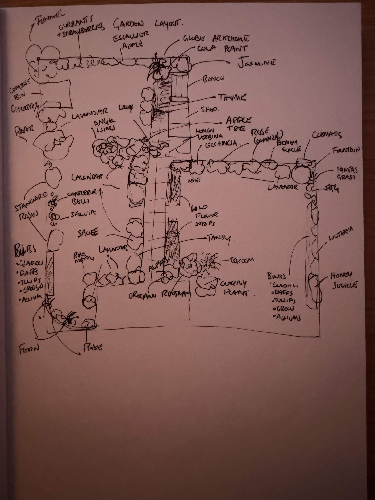
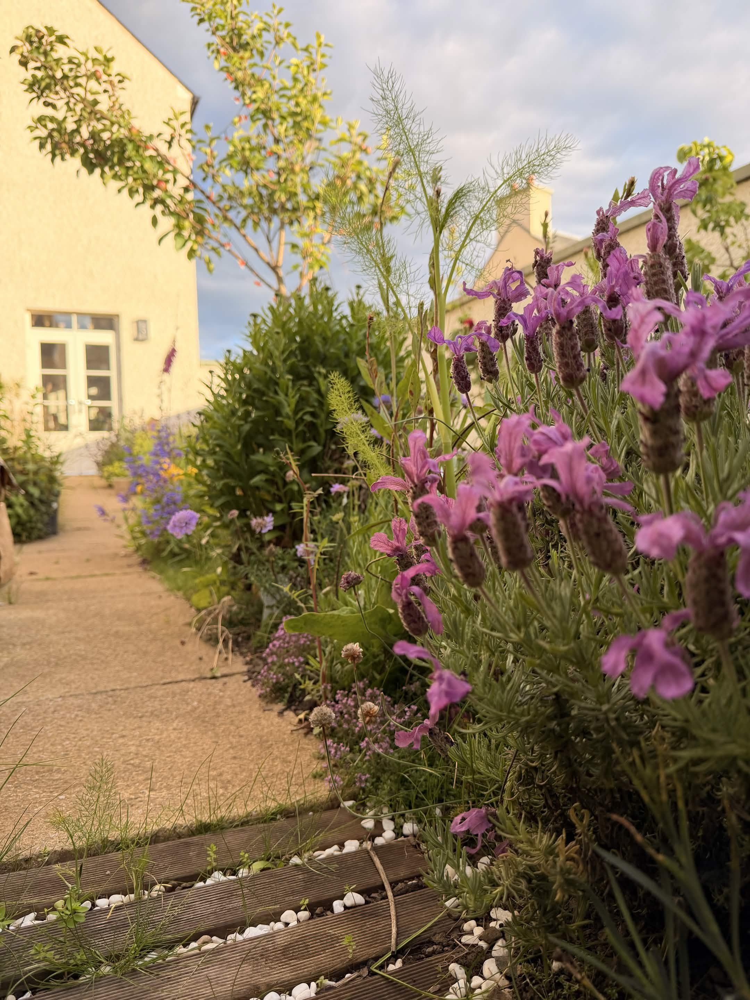
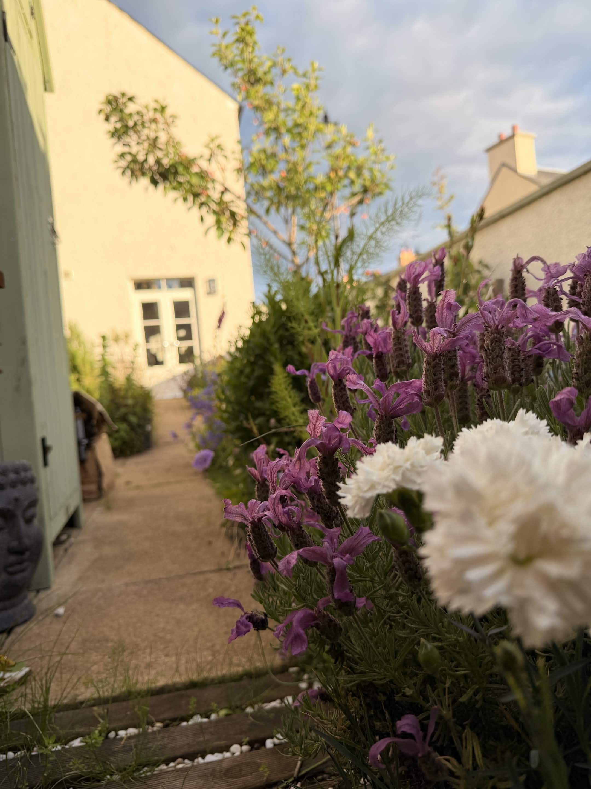
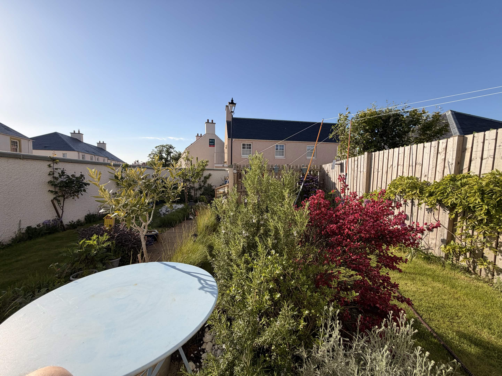
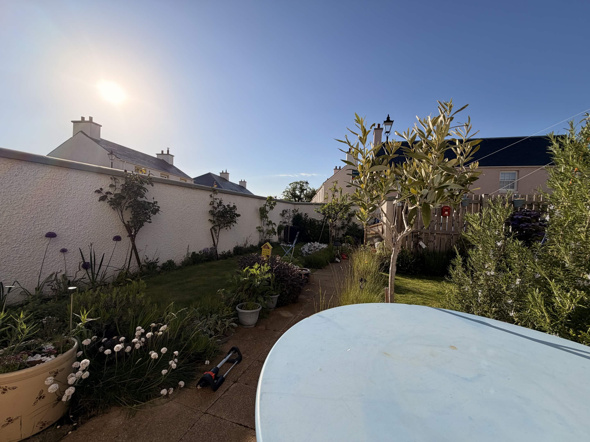
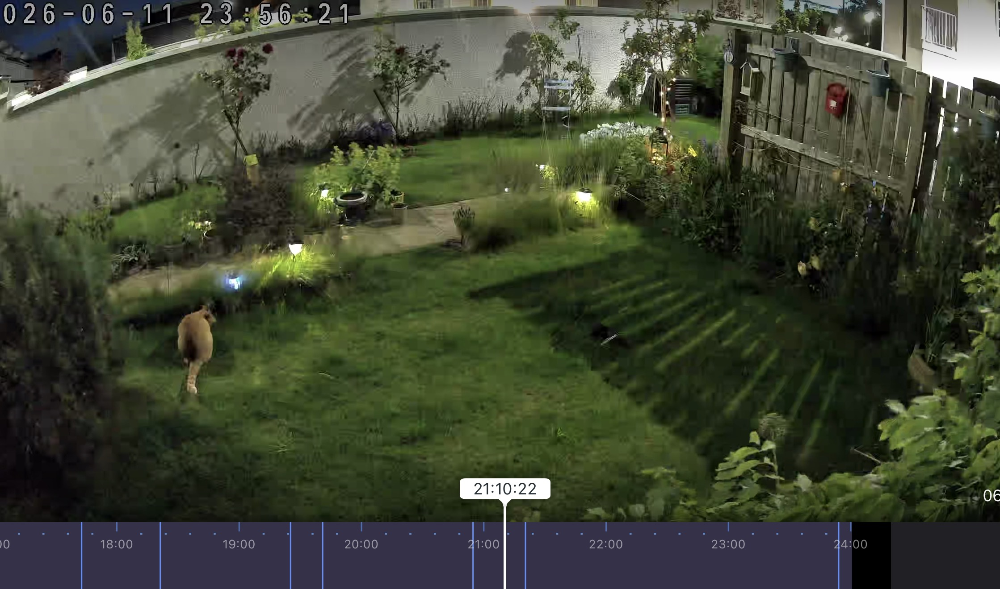

The layout

What's growing
The garden today





Care calendar
Month-by-month jobs for these exact plants. The current month is highlighted.
A slow, aromatic plot — herbs, climbers, fruit and a sun-trap olive or two.






Month-by-month jobs for these exact plants. The current month is highlighted.